AIM4 User Guide
This document helps users to understand the user interface of the AIM4 simulator and learn how to start and control simulations in the simulator. In Section 1, we discuss how to set up a simulation in which all intersections are controlled by the AIM protocol. In Section 2, we present the set up of a simulation in which all intersections use traffic signals. In Section 3, we present how to run a simulation in which stop signs are used. In Section 4, we present the elements in the user interface for controlling simulations.1. Choosing a Simulation Setup Screen
When you start the simulator, you should see the following window:
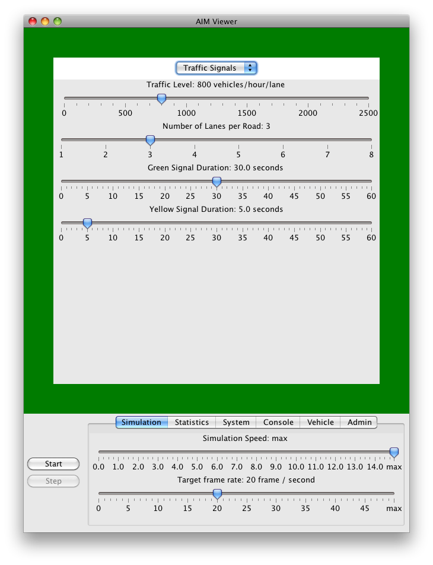
This is the setup screen for the configuring a simulation in which
all intersection controls are traffic signals. Likewise,
if you choose "Stop signs", you will see the following setup screen:
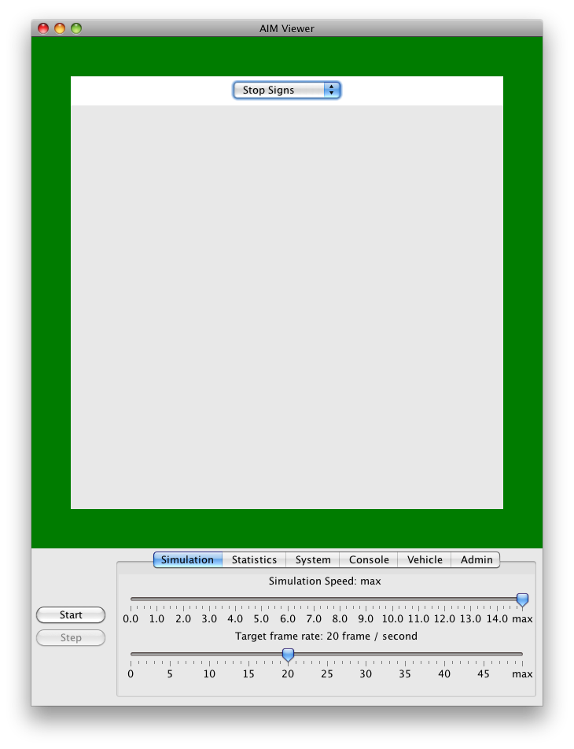
This is the setup screen for simulation in which all intersection controls are
stop signs. Currently the setup screen for stop signs "controller"
does not have any settings.
2. Simulations with the AIM Protocol
Now let us go to the setup screen for the AIM protocol only settings by choosing the "AIM Protocol" in the pull down menu:
- Traffic Level. The number of vehicles spawned at each spawn point per hour per lane. The default value is 1000 vehicles / hour / lane.
- Speed Limit. The speed limit of the roads. The default value is 25 meters / second.
- Stopping Distance Before Intersection. The distance from an intersection that a vehicle must stop completely if the vehicle cannot get a reservation. The default value is 1 meter.
- Number of North-bound/South-bound Roads. The number of roads in the north-south direction. The default value is 1.
- Number of East-bound/West-bound Roads. The number of roads in the east-west direction. The default value is 1.
- Number of Lanes per Road. The number of lanes per road. The default value is 3.

Understanding the Simulation Screen
Suppose you started a simulation with only one intersection:
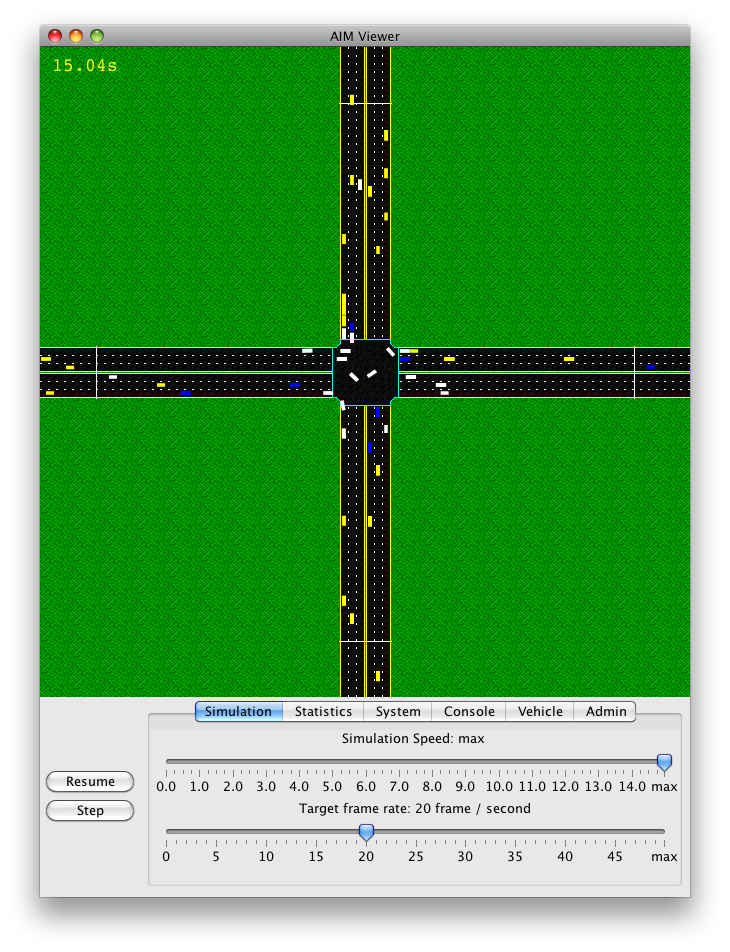
In this screen, vehicles are spawned at the spawn points
at the edge of the screen. The rate at which vehicles are spawned
at the spawn points are determined by the traffic level at the screen.
At the top left corner of the screen is the current simulation time,
which is the amount of time the simulation has passed since the
beginning of the simulation. The initial simulation time is 0 and
it increases at an increment of 0.02 second by default.
Notice that a simulation second is not the same as a second in real
life, and this allows the simulation runs at a much faster speed.
The speed of the simulation can be adjusted in the control panel
at the bottom of the screen. We will discuss the control panel in
detail in Section 5.
The color of a vehicle indicates the state of the reservation of
the vehicle:
- Yellow vehicles - vehicles that have not yet received a reservation and are not currently waiting for a reservation
- Blue vehicles - vehicles that have sent a reservation request but have not received a reply from the intersection managers
- White vehicles - vehicles that have got reservations and can enter the intersections.
3. Simulations with Traffic Signals
Now press the Escape key to go back to the setup screen, and then choose "Traffic Signals" in the pull down menu. We will see the following setup screen:- Traffic Level. The number of vehicles spawned at each spawn point per hour per lane. The default value is 800 vehicles / hour / lane.
- Number of Lanes per Road. The number of lanes per road. The default value is 3.
- Green Signal Duration. The duration of the green signals. The default value is 30 seconds.
- Yellow Signal Duration. The duration of the yellow signals. The default value is 5 seconds.
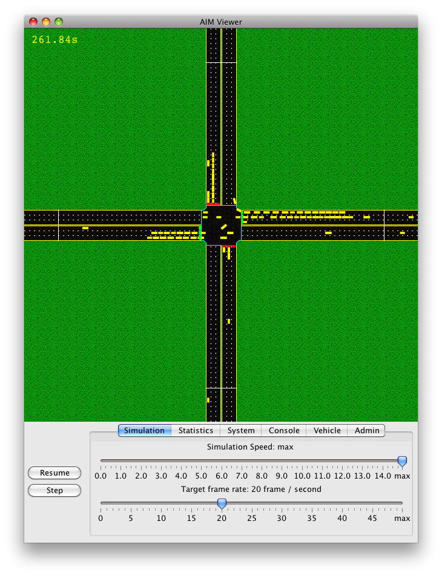
The traffic signal in the simulation is a six-phase traffic signals
with two protected left-turn phases. Also, vehicles can make a
right-turn at any time.
As can be seen, there are traffic signals at all incoming lanes of the
intersection. There are three different traffic signals: green,
yellow and red. The duration of the green and yellow signals are
determined by the chosen values in the setup screen. The duration of
the red signal is equal to the sum of the duration of the green signal
and the duration of the yellow signal.
All vehicles in this simulation are yellow and the color has no
special meaning, as there is no need to indicate the reservation status.
4. Simulations with Stop Signs
Let us try out the setup for stop signs by pressing the Escape key and then choose "Stop Signs" in the pull down menu. We will see the following setup screen:
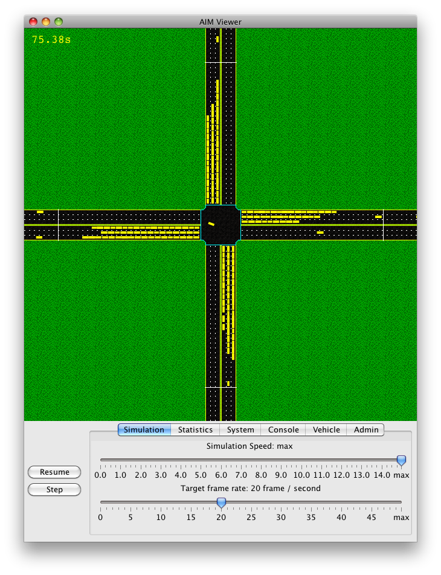
At first glance, only one vehicle has the right of way to enter the
intersection at any time. But it is not true: when the vehicle inside
the intersection almost completes its traversal and is leaving the
intersection, another vehicle can move into into the intersection.
Under the stop signs, vehicles are first-come, first-serve---the first
vehicle who stops at the intersection is allowed to enter intersection.
If multiple vehicles stop at the intersection, the right of ways are
granted in a counter-clockwise direction of the entering roads.
5. Simlulation Controls
In this section, we will explain other functions for controlling simulations in the simulator. At the bottom of the simulator window is the simulation control panel:
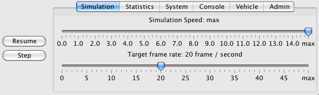
The control panel is used for controlling the simulation process and
display various information related to the simulation. Apart from the
control panel, the menu items in the menu bar also provides several
useful function for conducting experiments and displaying useful
information.
5.1 Buttons, Keyboard shortcuts, and Mouse Controls
On the left of the control panel, there are two buttons. The first one is the Start/Pause/Resume button. The second one is the Step button. In previous sections, we have already used the Start button to start a simulation. Once the Start button is pressed, it will turn into the Pause botton, which is used to pause the simulation. Once the simulation is paused, the Pause button becomes the Resume button, which is used to resume the simulation. When the simulation is paused, users can press the Step button beneath the Resume button to advance the simulation step by step, at an increment of 0.02 second. You can control the simulation by using the following keyboard shortcuts, which functions are similar to the buttons:- Enter key. Pause/resume the simulation process. Press the Enter key to pause the simulation, and then press the Enter key again to resume the simulation.
- Space key. Pause/step the simulation process. Press the Space key to pause the simulation process if it is running. Then press the Space key again to advance the paused simulation by one time step.
- Escape key. Terminate the simulation process and return to the setup screen.
5.2 Control Tabs
There are six control tabs to control simulations and display useful information about the simulations. These tabs are:- Simulation Tab - for controlling the speed of the simulation process
- Statistics Tab - for showing the statistics of the simulation process
- System Tab - for showing the information of the system
- Console Tab - for displaying the message generated by the simulation process
- Vehicle Tab - for presenting the information of a selected vehicle
- Admin Tab - for changing the intersection managers when the simulation process is running
5.2.1 Simulation Tab
In the simulation tab, there are two sliders:- Simulation speed slider - The simulation speed is the number of simulations seconds for one real second. If the simulation speed is 1, then the simulation will run in the "normal" speed---each simulation second takes exactly 1 second in the real life. If the simulation speed is 2, the simulation process runs twice. If the simulation speed is less than 1, the simulation will run in a slow motion. If the simulation speed is 0, the simulation process will pause. Usually, we want to set the simulation speed to a larger value to save time. But the simulation speed is too large, the simulation may not be able to update the screen at the expected simulation speed and the actual simulation speed is smaller than the chosen one. The default simulation speed is maximum, which means that the simulation process should run as quickly as possible.
- Target frame rate slider - Frame rate is the frequency at which the simulation screen is updated. The target frame rate is the expected frequency at which the simulator should update the simulation screen. The update of the simulation screen takes a lot of CPU cycles, thus by reducing the target frame rate, the simulation process can run much faster. Notice that if the target frame rate is set too large, the simulator would not be able to update the screen at the target frame rate, and the actual framte rate will be less than the target frame rate. The default target frame rate is 20 frames per second.
5.2.2 Statistics Tab
The statistics tab shows several important statistics of the current simulation process:
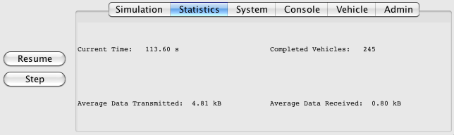
- Current Time - The current simulation time.
- Completed Vehicles - The number of vehicles that have reached their destination and left the map.
- Average Data Transmitted - The amount of data, on average, sent from a vehicle to intersection managers. The unit is kilobytes.
- Average Data Received - The amount of data, on average, sent from intersection managers to a vehicle. The unit is kilobytes.
5.2.3 System Tab
The system tab shows the information about the system and the memory usage of the simulator.
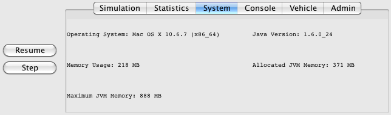
- Operating System - The information of the operating system in which the Java virtual machine is running.
- Jave Version - The version of the Java virtual machine.
- Memory Usage - The amount of memory that is currently used by the simulator.
- Allocated JVM Memory - The amount of memory allocated by the Jave virtual machine. for the simulation.
- maximum JVM Memory - The maximum amount of memory the simulator can use.
5.2.4 Console Tab
The console screen is a text area for a simulation process to output various information pertinent to the simulation. This tab is mainly for debugging purpose. In this release, simulation processes do not send any message to the console.
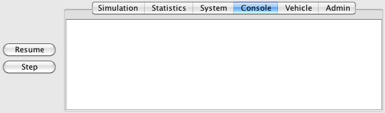
5.2.5 Vehicle Tab
The vehicle tab and the vehicle information window show the information of the selected vehicle. To select vehicle, click a vehicle in the map. Once a vehicle is selected, the color of the vehicle will change to orange:
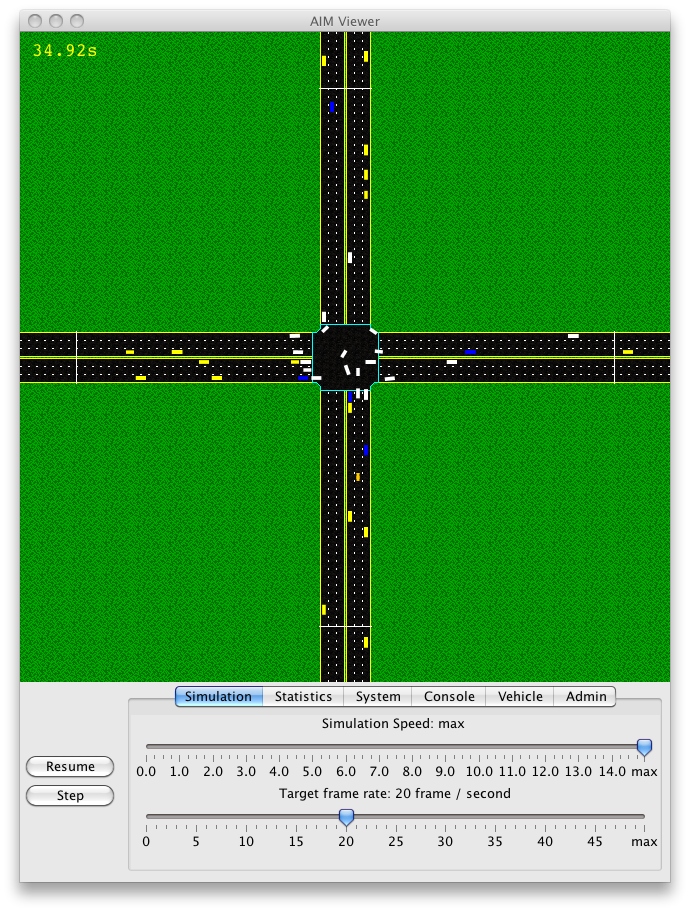
At the same time, the vehicle information window will appear:
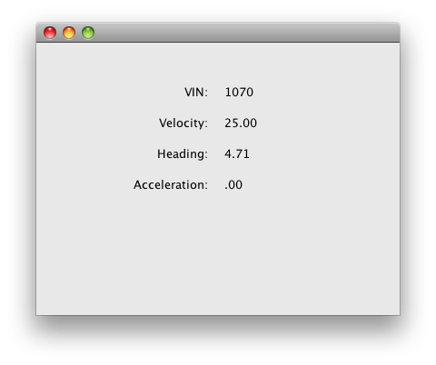
The vehicle information shows the following information:
- VIN - The VIN of the vehicle.
- Velocity - The current velocity of the vehicle. The unit is meter per second.
- Heading - The current direction of the vehicle. The unit is radian. The vehicle moving in the east-bound direction (x-axis) has a heading of 0 radian. The heading increases in the counter-clockwise direction.
- Acceleration - The current velocity of the vehicle. The unit is m2/s.
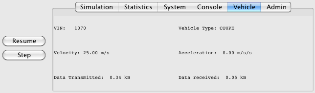
In addition to the VIN, the current velocity and the
current acceleration, the vehicle tab shows the following additional
information.
- Vehicle Type - The type of the selected vehicle.
- Data Transmitted - The amount of data sent from the selected vehicle to intersection managers.
- Data received - The amount of data sent from intersection managers to the selected vehicle.
5.2.6 Admin Tab
The admin tab allows users to replace the intersection manager of the selected intersection on the fly when the simulation process is running. First, you have to select an intersection by clicking the intersection. The color of the outline of selected intersection will change to orange after the selection:
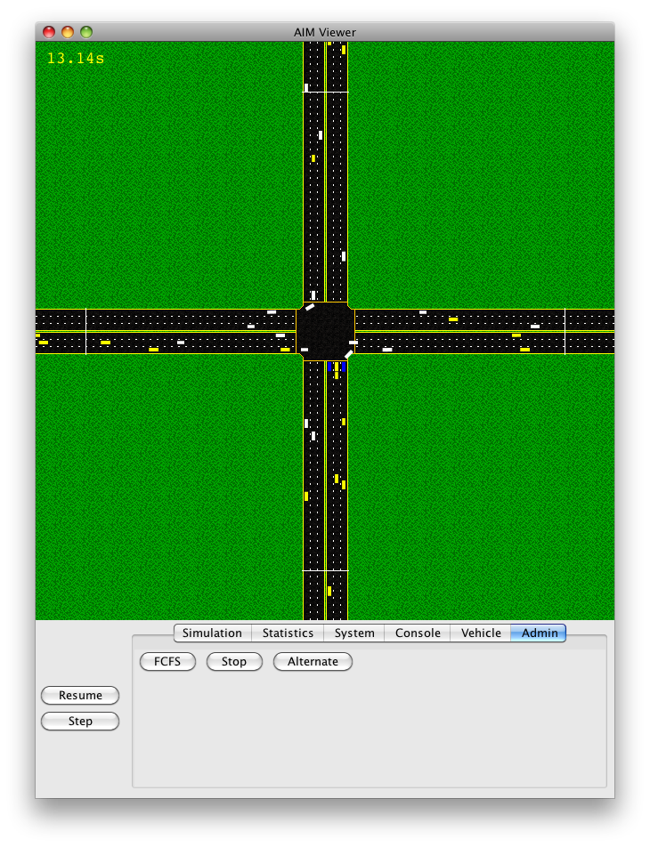
Then click the admin tab and you can select one of the following
three intersection managers:
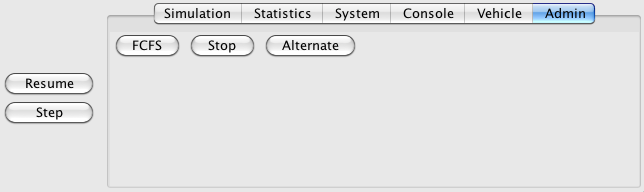
- FCFS - The AIM protocol with the First-Come, First-Served policy.
- Stop - Stop signs.
- Alternate - A traffic signal protocol with four phases. First, vehicles are only allowed to go straight through the intersection. Second, all vehicles stop before the intersection. Third, vehicles are only allowed to make a turn. Fourth, all vehicles stop before the intersection.
5.4 Menu bar
More functions are accessible from the menu bar of the simulator. In this section, we will describe some of these functions.- aim4.Main / About aim4.Main - The "About" Screen.
- aim4.Main / Quit aim4.Main - Terminate the simulation and exit.
- Simulator / Start - Same as the Start button.
- Simulator / Pause - Same as the Pause button.
- Simulator / Step - Same as the Step button.
- Simulator / Reset - Reset the simulation and return to the setup screen. Same as the Escape key.
- Data / Dump Data Collection Lines' Data - Export the data collected by data collection lines to a file.
- Recording / Start - Record the simulation.
- Recording / Stop - Stop recording the simulation.
- UDP / Start Listening - Start to listen to the real autonomous message. Used for mixed reality experiments.
- UDP / Stop Listening - Stop to listen to the real autonomous message. Used for mixed reality experiments.
- View / Show Simulation Time - Show/hide the simulation time at the top left corner of the simulation.
- View / Show VIN numbers - Show/hide the VINs of the vehicles on the map.
- View / Show IM Shapes - Show/hide the reserved tiles at the intersecton.
- Debug / Clear Debug Points - Remove debug points (for debugging).
Copyright (c) 2011 Tsz-Chiu Au (chiu@cs.utexas.edu), Peter Stone (pstone@cs.utexas.edu) University of Texas at Austin All rights reserved. THIS SOFTWARE IS PROVIDED BY THE COPYRIGHT HOLDERS AND CONTRIBUTORS "AS IS" AND ANY EXPRESS OR IMPLIED WARRANTIES, INCLUDING, BUT NOT LIMITED TO, THE IMPLIED WARRANTIES OF MERCHANTABILITY AND FITNESS FOR A PARTICULAR PURPOSE ARE DISCLAIMED. IN NO EVENT SHALL THE COPYRIGHT OWNER OR CONTRIBUTORS BE LIABLE FOR ANY DIRECT, INDIRECT, INCIDENTAL, SPECIAL, EXEMPLARY, OR CONSEQUENTIAL DAMAGES (INCLUDING, BUT NOT LIMITED TO, PROCUREMENT OF SUBSTITUTE GOODS OR SERVICES; LOSS OF USE, DATA, OR PROFITS; OR BUSINESS INTERRUPTION) HOWEVER CAUSED AND ON ANY THEORY OF LIABILITY, WHETHER IN CONTRACT, STRICT LIABILITY, OR TORT (INCLUDING NEGLIGENCE OR OTHERWISE) ARISING IN ANY WAY OUT OF THE USE OF THIS SOFTWARE, EVEN IF ADVISED OF THE POSSIBILITY OF SUCH DAMAGE.